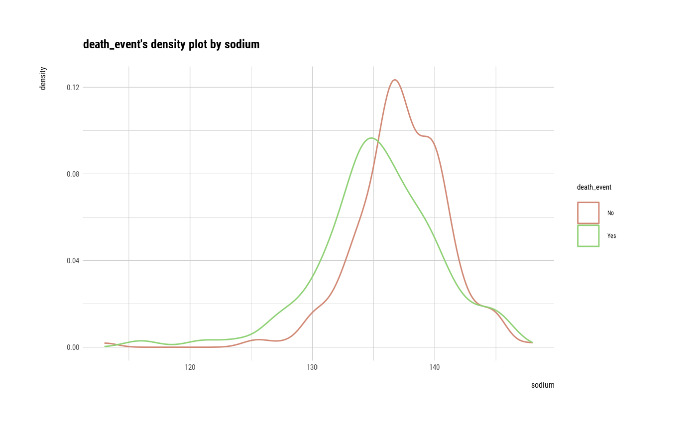
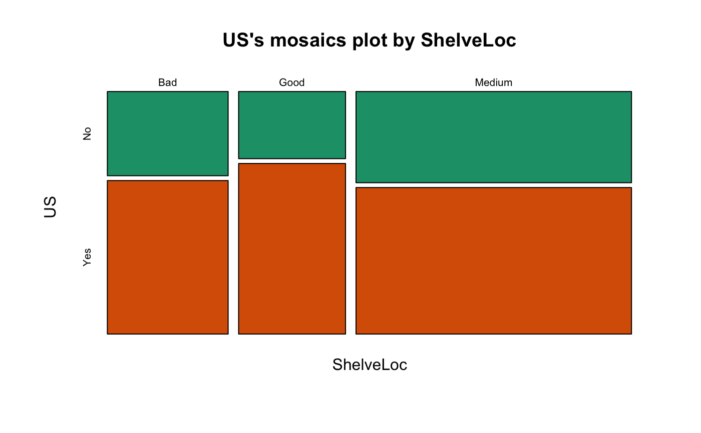
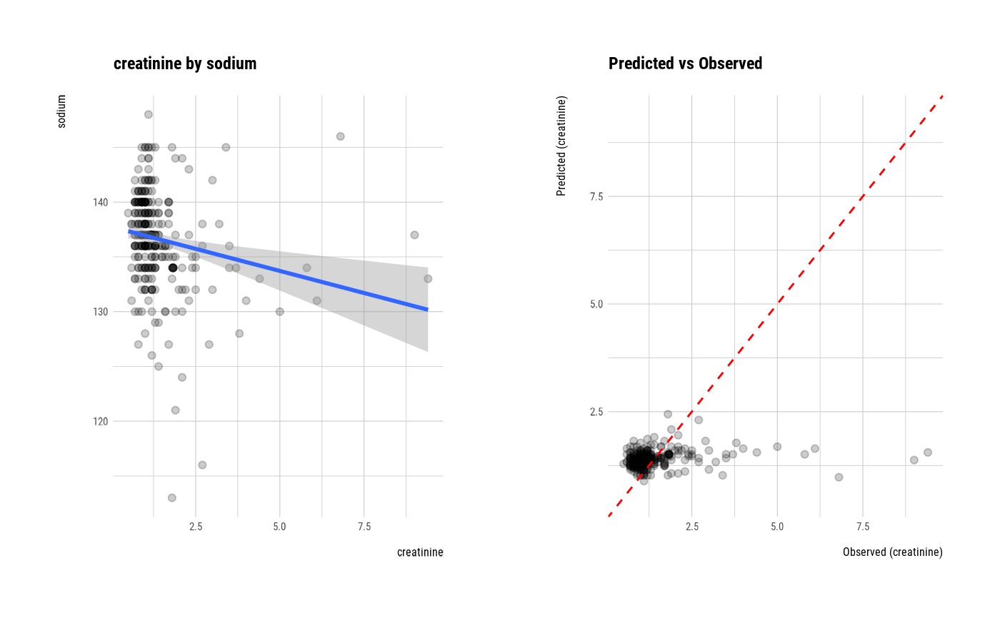
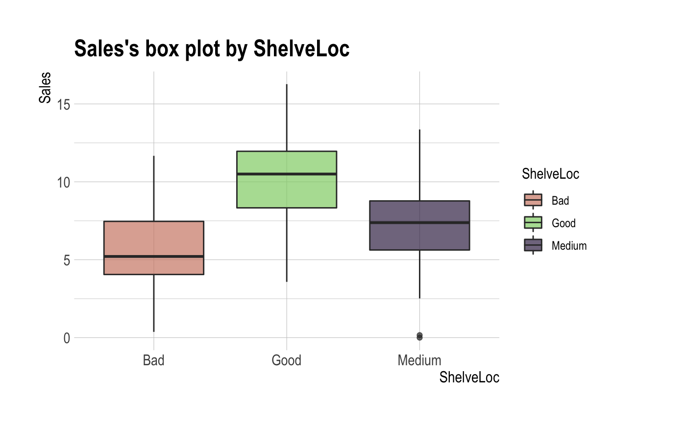
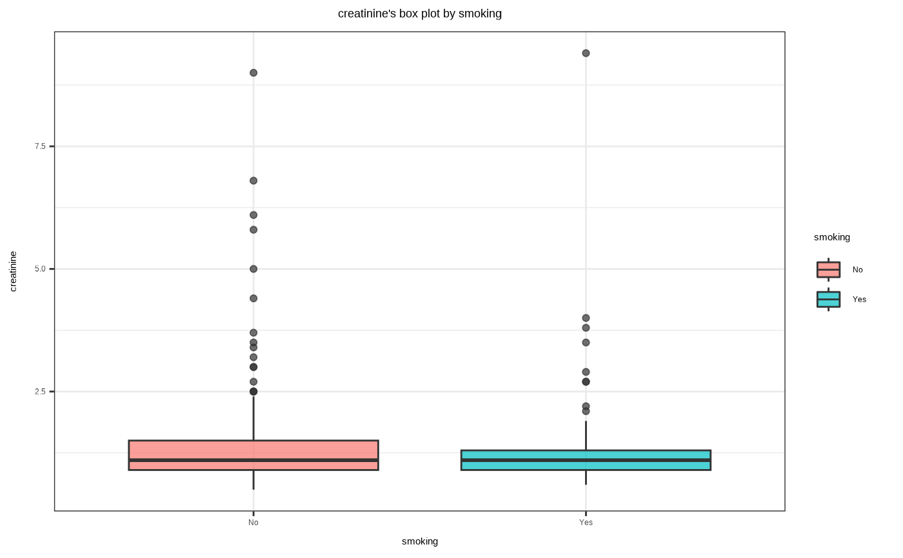

In the data analysis, a target_df class is created to identify the relationship between the target variable and the other variable.
target_by(.data, target, ...) # S3 method for data.frame target_by(.data, target, ...)
| .data | a data.frame or a |
|---|---|
| target | target variable. |
| ... | arguments to be passed to methods. |
an object of target_df class. Attributes of target_df class is as follows.
type_y : the data type of target variable.
Data analysis proceeds with the purpose of predicting target variables that correspond to the facts of interest, or examining associations and relationships with other variables of interest. Therefore, it is a major challenge for EDA to examine the relationship between the target variable and its corresponding variable. Based on the derived relationships, analysts create scenarios for data analysis.
target_by() inherits the grouped_df class and returns a target_df
class containing information about the target variable and the variable.
See vignette("EDA") for an introduction to these concepts.
# \donttest{ # If the target variable is a categorical variable categ <- target_by(heartfailure, death_event) # If the variable of interest is a numerical variable cat_num <- relate(categ, sodium) cat_num#> # A tibble: 3 x 27 #> variable death_event n na mean sd se_mean IQR skewness kurtosis #> <chr> <fct> <int> <int> <dbl> <dbl> <dbl> <dbl> <dbl> <dbl> #> 1 sodium No 203 0 137. 3.98 0.280 4.5 -1.22 6.49 #> 2 sodium Yes 96 0 135. 5.00 0.510 5.25 -0.677 2.08 #> 3 sodium total 299 0 137. 4.41 0.255 6 -1.05 4.12 #> # … with 17 more variables: p00 <dbl>, p01 <dbl>, p05 <dbl>, p10 <dbl>, #> # p20 <dbl>, p25 <dbl>, p30 <dbl>, p40 <dbl>, p50 <dbl>, p60 <dbl>, #> # p70 <dbl>, p75 <dbl>, p80 <dbl>, p90 <dbl>, p95 <dbl>, p99 <dbl>, #> # p100 <dbl>summary(cat_num)#> variable death_event n na mean #> Length:3 No :1 Min. : 96.0 Min. :0 Min. :135.4 #> Class :character Yes :1 1st Qu.:149.5 1st Qu.:0 1st Qu.:136.0 #> Mode :character total:1 Median :203.0 Median :0 Median :136.6 #> Mean :199.3 Mean :0 Mean :136.4 #> 3rd Qu.:251.0 3rd Qu.:0 3rd Qu.:136.9 #> Max. :299.0 Max. :0 Max. :137.2 #> sd se_mean IQR skewness #> Min. :3.983 Min. :0.2552 Min. :4.500 Min. :-1.2189 #> 1st Qu.:4.198 1st Qu.:0.2674 1st Qu.:4.875 1st Qu.:-1.1335 #> Median :4.412 Median :0.2795 Median :5.250 Median :-1.0481 #> Mean :4.466 Mean :0.3484 Mean :5.250 Mean :-0.9812 #> 3rd Qu.:4.707 3rd Qu.:0.3950 3rd Qu.:5.625 3rd Qu.:-0.8624 #> Max. :5.002 Max. :0.5105 Max. :6.000 Max. :-0.6766 #> kurtosis p00 p01 p05 #> Min. :2.081 Min. :113.0 Min. :120.8 Min. :127.0 #> 1st Qu.:3.100 1st Qu.:113.0 1st Qu.:122.3 1st Qu.:128.5 #> Median :4.120 Median :113.0 Median :123.9 Median :130.0 #> Mean :4.229 Mean :114.0 Mean :123.6 Mean :129.3 #> 3rd Qu.:5.304 3rd Qu.:114.5 3rd Qu.:125.0 3rd Qu.:130.5 #> Max. :6.488 Max. :116.0 Max. :126.0 Max. :131.0 #> p10 p20 p25 p30 #> Min. :130.0 Min. :132.0 Min. :133.0 Min. :134.0 #> 1st Qu.:131.0 1st Qu.:133.0 1st Qu.:133.5 1st Qu.:134.5 #> Median :132.0 Median :134.0 Median :134.0 Median :135.0 #> Mean :131.7 Mean :133.5 Mean :134.2 Mean :135.0 #> 3rd Qu.:132.5 3rd Qu.:134.2 3rd Qu.:134.8 3rd Qu.:135.5 #> Max. :133.0 Max. :134.4 Max. :135.5 Max. :136.0 #> p40 p50 p60 p70 #> Min. :134.0 Min. :135.5 Min. :136.0 Min. :138.0 #> 1st Qu.:135.0 1st Qu.:136.2 1st Qu.:137.0 1st Qu.:138.5 #> Median :136.0 Median :137.0 Median :138.0 Median :139.0 #> Mean :135.7 Mean :136.5 Mean :137.3 Mean :138.7 #> 3rd Qu.:136.5 3rd Qu.:137.0 3rd Qu.:138.0 3rd Qu.:139.0 #> Max. :137.0 Max. :137.0 Max. :138.0 Max. :139.0 #> p75 p80 p90 p95 #> Min. :138.2 Min. :139.0 Min. :141.0 Min. :143.0 #> 1st Qu.:139.1 1st Qu.:139.5 1st Qu.:141.1 1st Qu.:143.5 #> Median :140.0 Median :140.0 Median :141.2 Median :144.0 #> Mean :139.4 Mean :139.7 Mean :141.2 Mean :143.7 #> 3rd Qu.:140.0 3rd Qu.:140.0 3rd Qu.:141.3 3rd Qu.:144.0 #> Max. :140.0 Max. :140.0 Max. :141.5 Max. :144.0 #> p99 p100 #> Min. :145.0 Min. :146.0 #> 1st Qu.:145.0 1st Qu.:147.0 #> Median :145.0 Median :148.0 #> Mean :145.0 Mean :147.3 #> 3rd Qu.:145.0 3rd Qu.:148.0 #> Max. :145.1 Max. :148.0plot(cat_num)# If the variable of interest is a categorical variable cat_cat <- relate(categ, hblood_pressure) cat_cat#> hblood_pressure #> death_event No Yes #> No 137 66 #> Yes 57 39summary(cat_cat)#> Call: xtabs(formula = formula_str, data = data, addNA = TRUE) #> Number of cases in table: 299 #> Number of factors: 2 #> Test for independence of all factors: #> Chisq = 1.8827, df = 1, p-value = 0.17plot(cat_cat)##--------------------------------------------------- # If the target variable is a numerical variable num <- target_by(heartfailure, creatinine) # If the variable of interest is a numerical variable num_num <- relate(num, sodium) num_num#> #> Call: #> lm(formula = formula_str, data = data) #> #> Coefficients: #> (Intercept) sodium #> 7.45097 -0.04433 #>summary(num_num)#> #> Call: #> lm(formula = formula_str, data = data) #> #> Residuals: #> Min 1Q Median 3Q Max #> -1.0433 -0.4329 -0.2443 0.0557 7.8454 #> #> Coefficients: #> Estimate Std. Error t value Pr(>|t|) #> (Intercept) 7.45097 1.82610 4.080 5.79e-05 *** #> sodium -0.04433 0.01336 -3.319 0.00102 ** #> --- #> Signif. codes: 0 ‘***’ 0.001 ‘**’ 0.01 ‘*’ 0.05 ‘.’ 0.1 ‘ ’ 1 #> #> Residual standard error: 1.018 on 297 degrees of freedom #> Multiple R-squared: 0.03576, Adjusted R-squared: 0.03251 #> F-statistic: 11.01 on 1 and 297 DF, p-value: 0.001017 #>plot(num_num)#> Analysis of Variance Table #> #> Response: creatinine #> Df Sum Sq Mean Sq F value Pr(>F) #> smoking 1 0.24 0.23968 0.2234 0.6368 #> Residuals 297 318.68 1.07301summary(num_cat)#> #> Call: #> lm(formula = formula(formula_str), data = data) #> #> Residuals: #> Min 1Q Median 3Q Max #> -0.9133 -0.4527 -0.2527 0.0170 8.0473 #> #> Coefficients: #> Estimate Std. Error t value Pr(>|t|) #> (Intercept) 1.41335 0.07270 19.440 <2e-16 *** #> smokingYes -0.06064 0.12831 -0.473 0.637 #> --- #> Signif. codes: 0 ‘***’ 0.001 ‘**’ 0.01 ‘*’ 0.05 ‘.’ 0.1 ‘ ’ 1 #> #> Residual standard error: 1.036 on 297 degrees of freedom #> Multiple R-squared: 0.0007515, Adjusted R-squared: -0.002613 #> F-statistic: 0.2234 on 1 and 297 DF, p-value: 0.6368 #>plot(num_cat)# }